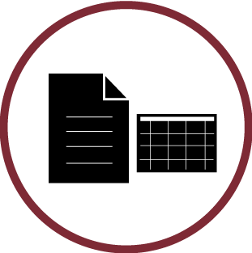
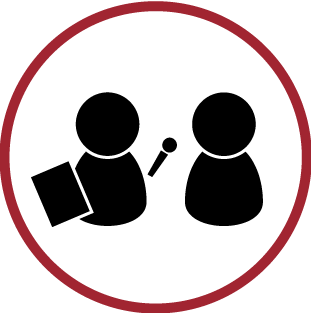
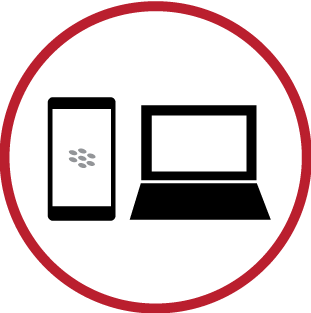

focuses on how people learn a BlackBerry Z10 or Q10 device
Role
Usability Researcher
Client
BlackBerry
Year / Time Taken
2012 - 2013 / 8 months
Tools
User experience research methods, Ovo Studios software
Purpose
The goal of this study was to conduct research and gain insights on how users learn and discover the features of BlackBerry 10 over a period of one week.
My Contribution
Result
Through our research, we gained a better understanding on the learnability of BlackBerry 10 and conveyed these findings back to different departments.

Preparation Work

Interaction with Participants

Hardware & Software Knowledge
Research Findings